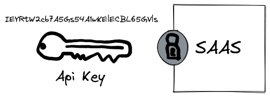
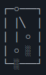
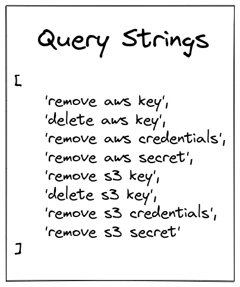
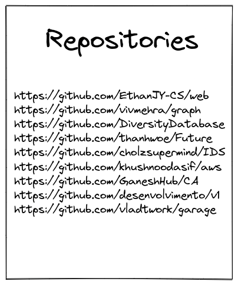
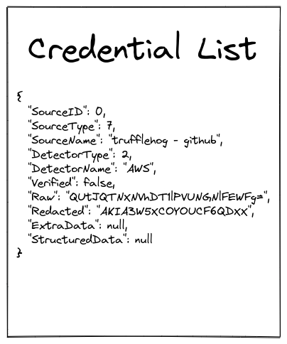
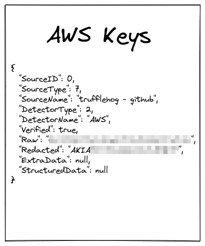
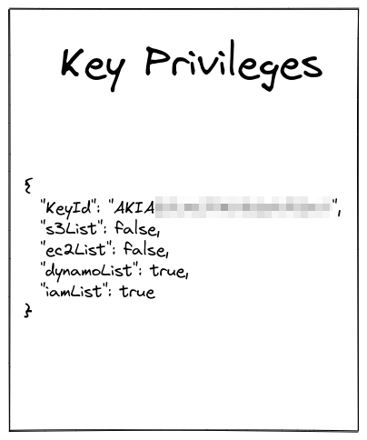
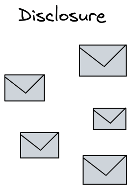
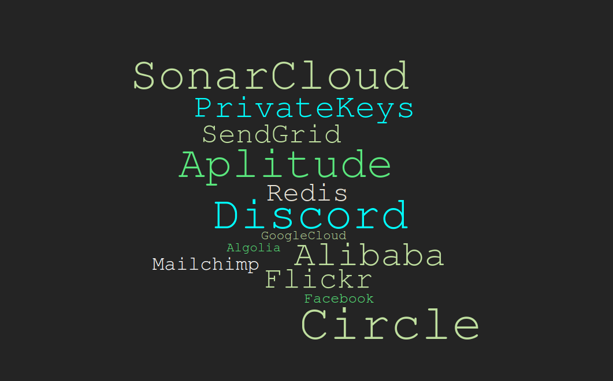

The secrets in your
git repository
06.10.2021
were leaked to the public
Inside the repositories researchers found:
- 194 AWS keys
- 69 Twilio keys
- 68 Google API keys
- 14 Github OAuth keys
- 4 Stripe keys
- 1000s of passwords
- 100s of database connection strings
- 100s of private keys
What if attackers had access to your internal repositories?
... would you be worried?
Topics
- Why are there credentials in git repositories? 🤔
- Tools to find credentials 🔎
- Mining public git repositories for AWS keys ⛏️
- Where else can credentials be found? 🤷
- API keys and cloud security ☁️
- How can I protect myself? 🛡️
Why are there credentials in git repositories? 🤔
How Secrets are used
Secrets are used to authenticate software against external services.
Secrets are committed by accident
The 4 maturity levels of secret removal
Level 0

Credentials are not deleted
Level 1

A commit deletes the secret from the code. It still persists in the git history.
Still part of the history
Level 2

Git history is rewritten. Still vulnerable to monitoring and advanced repository analysis techniques.
Level 3

Secret is rotated. Can be painful and time consuming.
Did you know...
Secrets not deleted after 24 hours tend to stay forever
Git repositories are everywhere
- Configuration issue of the git server could make all repositories public
- Local copies are shared
- Build server misconfiguration pushes git repositories to artifact stores
- Repositories are deployed on a web server
Tools to find credentials 🔎
How do they work?
Heuristics
- Pattern matching (regex)
- Entropy
- Context information
Trufflehog
- New Version 3 was released recently
- Scans the history of a repository for secrets
- Over 700 credential detectors
- Support for active verification
Credentials detectors
idPat = regexp.MustCompile(`\b((?:AKIA|ABIA|ACCA|ASIA)[0-9A-Z]{16})\b`)
keyPat = regexp.MustCompile(`\b([A-Za-z0-9+/]{40})\b`)
Active verification
// REQUEST VALUES.
method := "GET"
service := "sts"
host := "sts.amazonaws.com"
region := "us-east-1"
endpoint := "https://sts.amazonaws.com"
datestamp := time.Now().UTC().Format("20060102")
amzDate := time.Now().UTC().Format("20060102T150405Z0700")
req, err := http.NewRequestWithContext(ctx, method, endpoint, nil)
if err != nil {
continue
}
// TASK 1: CREATE A CANONICAL REQUEST.
// http://docs.aws.amazon.com/general/latest/gr/sigv4-create-canonical-request.html
canonicalURI := "/"
canonicalHeaders := "host:" + host + "\n"
signedHeaders := "host"
algorithm := "AWS4-HMAC-SHA256"
credentialScope := fmt.Sprintf("%s/%s/%s/aws4_request", datestamp, region, service)
params := req.URL.Query()
params.Add("Action", "GetCallerIdentity")
params.Add("Version", "2011-06-15")
params.Add("X-Amz-Algorithm", algorithm)
params.Add("X-Amz-Credential", resIdMatch+"/"+credentialScope)
params.Add("X-Amz-Date", amzDate)
params.Add("X-Amz-Expires", "30")
params.Add("X-Amz-SignedHeaders", signedHeaders)
Gitleaks
- Alternative to trufflehog
- Similar feature set
- Many knobs and buttons
- Does not offer active verification
Git Hound
- Built for bug hunters / Audits
- Intensive repository digging
- Results need to be reviewed manually
- Commercial SaaS provider
- Easy integration in build pipelines
- Additional Features like Alerting and Dashboards
Mining public git repositories for AWS keys ⛏️
Goals of project
- Verify theory that many Developers don't know how to delete accidental secret commits.
- Verify theory that there are many active credentials present on public git repositories.
- Search for AWS keys.
Rules of engagement
- No destructive operations with obtained credentials
- No accessing / exfiltration of any data
- Use credentials only to verify their permission level
- Notify repository owners afterwards
Step 1: Queries
Run queries against Github Search API
Step 2: Clean up repository list
First 200 results of each query. Duplicates removed
Step 3: Mine credentials
Repositories >50MB were skipped.
Step 4: Clean up credential list
Unique, verified AWS keys.
Step 5: Verify key privileges
Only test read access to resources.
Step 6: Notify repository owners
Send notification emails with instructions how to clean up.
8 Github Queries
1480 unique repositories
61 unique, verified AWS Keys
Bycatch
Of the 61 AWS Keys
- 13 Keys with S3 read access
- 26 Keys with DynamoDB read access
- 25 Keys with EC2 read access
- 23 Keys with IAM read access
Disclosure response
A more targeted approach

A more targeted approach
- Use OSINT to find domains and subdomains of organizations
- Use github search to find repositories which contain the org domains
- Filter out usages of public APIs
- If you find new hostnames, domains and subdomains, repeat
- Scan all repositories for secrets
- Don't limit search on github
Where else can credentials be found? 🤷
Other places to search
- Gitlab
- Github Gists
- Publicly exposed git repositories
- Artifact registries
- Docker images
- Firmware from hardware
- Hardcoded in Frontend Applications (Web and mobile)
API keys and cloud security ☁️
Cloud hacking
Very big topic. Different from traditional attacks. Typically does not use malware and exploits
Typical attack
- Initial access: Leaked credential or OAuth phishing
- Enumerate permissions
- Escalate permissions by finding / creating new credentials
- Repeat
How can I protect myself? 🛡️
Mitigation
- Onion approach works best
- Developer education
- Code reviews
- Use tooling to detect credentials in build pipeline
- Try to keep the false positives low!
- Check for secrets in code before open sourcing or sharing with third parties
Mitigation
- Follow least privilege principle for service accounts
- Don't reuse secrets
- Store production credentials in credential stores like vault.
- Use CloudTrail / Activity log to monitor activity of keys
- Delete keys when they are no longer required
Be like Gandalf

Sources
Sources (continued)
Image Sources
Presentation is published on github
https://github.com/nixrod/credential-harvesting-presentation